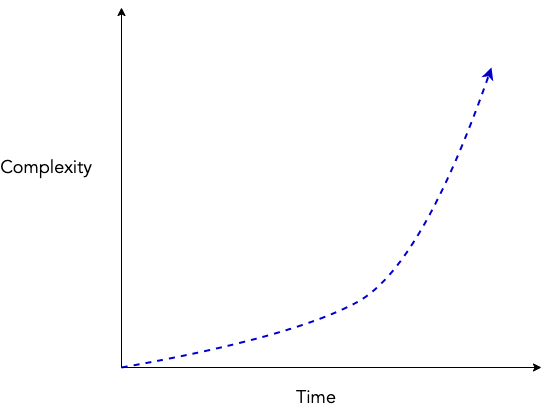
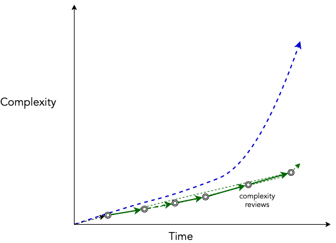

Oft noted tenet in the world of programming, this principal is the basis of continuous integration and many more things (I tried to dig a bit into the origins, but didn’t find much success).
Remember, “often” is used here as a relative measure of time, and could be replaced by a unit which makes sense -
- test integrations on every change (Integrations are hard)
- standup for 10 minutes everyday instead of an hour at the end of week (Alignments are hard)
- run performance reviews monthly (Perf reviews are hard)
- run OKR cadences monthly (Distributed work is hard)
- break all your user stories to 1 pointers (Estimating big stories is hard)
- pair program (Code reviews are hard)
- build and test changes incrementally (Boehm’s law)
As you can see, the value of following this tenet is high when complexity grows exponentially with time.

Once you start acting on reducing the complexity often or with every change, these increment complexity reviews stunt the growth of complexity.
